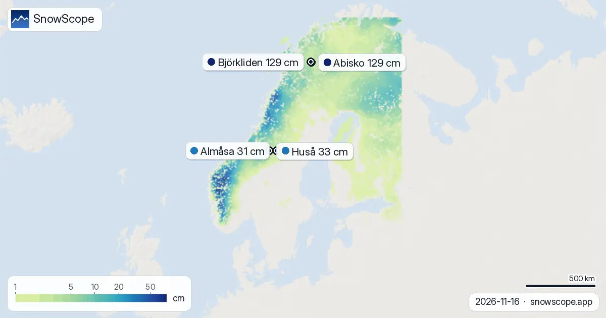

Snow in Switzerland today: how much is on the ground, 17 November 2026
The white area in Switzerland stands at about 12,830 km² today, down 3,680 km² on yesterday. That is 41 % of the high ground we map in Switzerland.
See the live snow forecast for Glacier 3000 in the SnowScope appSnow depth, powder alerts and the 3D map, free.
How much of the country is white
That is close to the 12,870 km² of a week ago. Most of the ground is white from about 1,700 m up.
| Resort | Snow depth | New snow, 72 h | Coming, next days | Top |
|---|---|---|---|---|
| Glacier 3000 | 46 cm | 67 cm | 91 cm | 2,931 m |
| Zermatt | 45 cm | 42 cm | 60 cm | 3,872 m |
| Jungfraujoch Snow Fun Park | 44 cm | 44 cm | 71 cm | 3,461 m |
| Ovronnaz | 40 cm | 54 cm | 78 cm | 2,456 m |
| Saas Grund | 37 cm | 28 cm | 41 cm | 3,142 m |

How deep it is, height by height
Snow depth on the ground, height by height: 1,000-1,500 m: on average under 1 cm (5 % of the ground white); 1,500-2,000 m: on average 2 cm (52 % of the ground white); 2,000-2,500 m: on average 8 cm (96 % of the ground white); above 2,500 m: on average 22 cm (100 % white).
The latest snowfall
Three-day totals peak at 48 cm, around the Valais Alps and the Bernese Oberland.
The last 24 hours alone brought up to 29 cm.
About 11,300 km² received at least 5 cm.
What it means on the slopes
Fresh snow on top of the base means soft turns on the upper slopes, while the lower runs stay patchy.
Keep an eye on the forecast: the coming snow could change the picture quickly.
Where to ski first
The deepest snow of the country's resorts is at Glacier 3000: 46 cm.
Close behind: Zermatt (45 cm), Jungfraujoch Snow Fun Park (44 cm), Ovronnaz (40 cm) and Saas Grund (37 cm).
Glacier 3000 picked up 67 cm in the last three days and could add 91 cm by Friday 20 November.
At Zermatt: 42 cm of fresh snow over three days, 60 cm more expected by Friday 20 November.
Snow lies on the upper slopes of 195 out of 280 resorts in Switzerland.
What is coming
The week ahead could bring up to 85 cm, 70 cm of it in the next three days.
Friday 20 November stands out, with up to 29 cm in a day.
Further out, days 8 to 14 show up to 40 cm on the snowiest slopes.
Tips for skiers
- Fresh snow on a cold base sticks badly: take care on steep slopes.
- Roads to the higher resorts may need winter tyres or chains.
- Read the local avalanche bulletin before going off-piste.
About these numbers
Resort snow depths are the deepest snow on the resort's upper slopes from the SnowScope snow model (about 1 km, run of 17 November); they are estimates for an area, not a measurement at one point. Station values are measurements on the date shown. Forecasts can change. Always read the official avalanche bulletin before going off-piste.
Cite this report
For research, teaching or the press: the numbers and charts are free to reuse under CC BY 4.0 with this citation.
SnowScope (2026), Snow in Switzerland today: how much is on the ground, 17 November 2026, https://snowscope.app/blog/en/2026/11/switzerland-snow-report-17-november-2026.html, accessed 2026-11-17
SnowScope (Atlas Labs). (2026, November 17). Snow in Switzerland today: how much is on the ground, 17 November 2026. SnowScope snow reports. https://snowscope.app/blog/en/2026/11/switzerland-snow-report-17-november-2026.html
BibTeX
@misc{snowscope2026switzerlandsnowreport17n,
author = {{SnowScope (Atlas Labs)}},
title = {Snow in Switzerland today: how much is on the ground, 17 November 2026},
year = {2026},
month = nov,
howpublished = {\url{https://snowscope.app/blog/en/2026/11/switzerland-snow-report-17-november-2026.html}},
note = {Published 2026-11-17 12:53 UTC; accessed 2026-11-17}
}· CC BY 4.0 · Methods, data and tools →
Glacier 3000: snow and temperature by height, this winter vs last (tools) →
Follow Glacier 3000
Free: a message when fresh snow is coming, and the forecast every morning.
More snow reports

Zermatt in numbers: where the snow lasts, the safest months and how to reach the car-free village, from 46 past winters of snow data.
Until 8 November, our forecast gives 21 cm at Saas Grund, 18 cm at Grindelwald and 18 cm at Pescegallo. Keep in mind: resort values come from our …

Sweden snow today, 16 November: snow cover, new snow, snow depth by height, the next days and the best resorts.